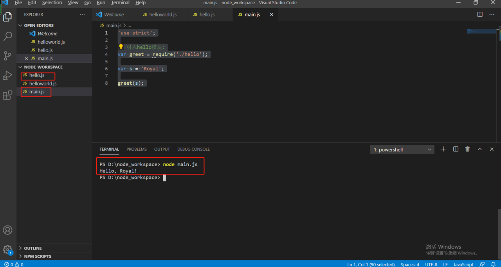

模块定义
- 在Node环境中，一个.js文件就称之为一个模块（module）。
模块优点
- 大大提高了代码的可维护性。
- 编写代码不必从零开始。当一个模块编写完毕，就可以被其他地方引用。我们在编写程序的时候，也经常引用其他模块，包括Node内置的模块和来自第三方的模块。常用的有fs（读写文件模块），http（Http模块）等等
- 逻辑分层，可以通过模块区分不同的逻辑分层，譬如router层，service层等等
- 4。使用模块还可以避免函数名和变量名冲突。相同名字的函数和变量完全可以分别存在不同的模块中，因此，我们自己在编写模块时，不必考虑名字会与其他模块冲突。
模块的导出和导入
在ES6中模块作为重要的组成部分被添加进来。模块的功能主要由 export 和 import 组成。每一个模块都有自己单独的作用域，模块之间的相互调用关系是通过 export 来规定模块对外暴露的接口，通过import来引用其它模块提供的接口。同时还为模块创造了命名空间，防止函数的命名冲突。
新建hello.js,导出一个函数
1
2
3
4
5
6
7
8
9'use strict';
var s = 'Hello';
function greet(name) {
console.log(s + ', ' + name + '!');
}
module.exports = greet; //这句是关键，导出的可以是变量，也可以是函数新建main.js,导入greet函数
1
2
3
4
5
6
7
8'use strict';
// 引入hello模块:
var greet = require('./hello');
var s = 'Royal';
greet(s);

报错检查点
- 模块名是否写对了；
- 模块文件是否存在；
- 相对路径是否写对了。
小结
- 一个模块想要对外暴露变量（函数也是变量），可以用module.exports = variable;，一个模块要引用其他模块暴露的变量，用var ref = require(‘module_name’);就拿到了引用模块的变量。
- 输出的变量可以是任意对象、函数、数组等等。
- 每个.js文件都是一个模块，它们内部各自使用的变量名和函数名都互不冲突，例如，hello.js和main.js都申明了全局变量var s = ‘xxx’，但互不影响。其实要实现“模块”这个功能，并不需要语法层面的支持。Node.js也并不会增加任何JavaScript语法。实现“模块”功能的奥妙就在于JavaScript是一种函数式编程语言，它支持闭包。如果我们把一段JavaScript代码用一个函数包装起来，这段代码的所有“全局”变量就变成了函数内部的局部变量。
module.exports vs exports
区别
如果要输出一个键值对象{}，可以利用exports这个已存在的空对象{}，并继续在上面添加新的键值；
如果要输出一个函数或数组，必须直接对module.exports对象赋值。
结论
直接对module.exports赋值，可以应对任何情况，无论是变量，函数或者数组，作为初学者可以记忆一种方法就够了
1
2
3module.exports = {
foo: function () { return 'foo'; }
};或者
1
module.exports = function () { return 'foo'; };
虽然用这一种，但是两种写法都要了解，如果别人这么写，你读别人代码也能读懂